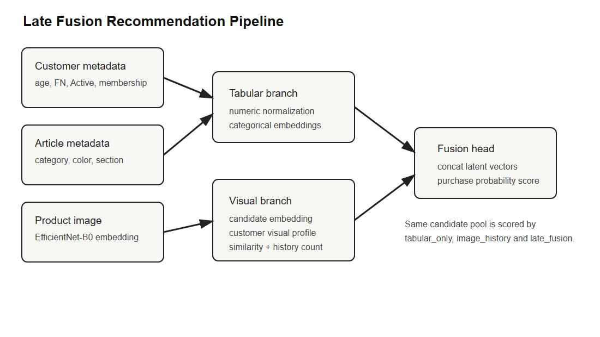
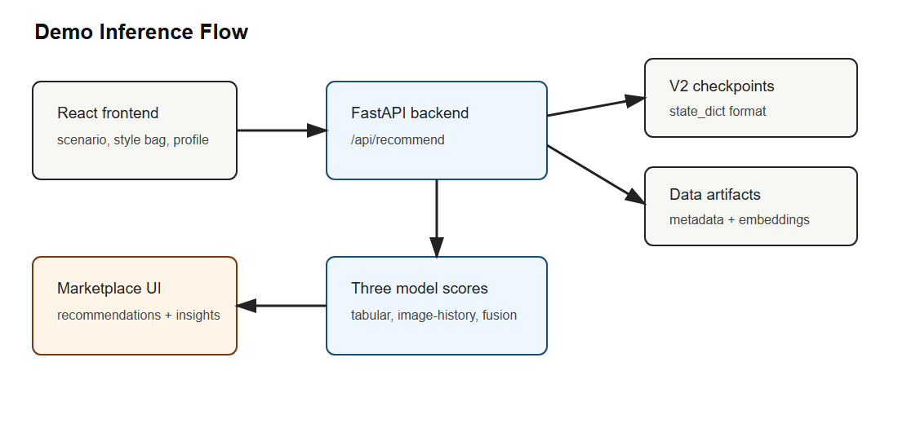
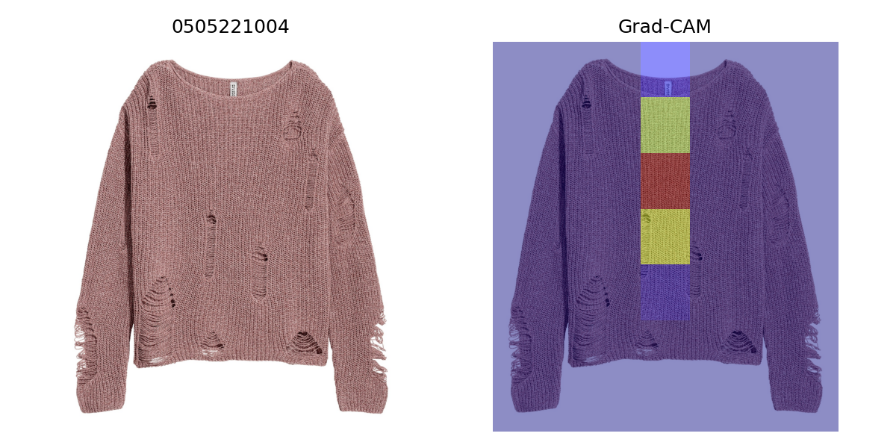

Yusuf Duman
Bilgisayar Mühendisliği Final Projesi
Teslim sürümü: 2026-06-02
Bu çalışma, H&M Personalized Fashion Recommendations veri seti
üzerinde moda ürünleri için multimodal bir öneri sistemi geliştirmeyi
amaçlar. Moda e-ticaretinde satın alma davranışı yalnızca ürün
kategorisi, müşteri yaşı veya geçmiş alışveriş sıklığı gibi tabular
alanlarla açıklanamaz; ürünün görsel görünümü, renk/siluet yapısı ve
müşterinin geçmişte tercih ettiği görsel stil de karar sürecine katkı
verir. Bu nedenle çalışmanın temel hipotezi, ürün görsellerinden
çıkarılan temsil vektörlerinin müşteri ve ürün metaverisiyle birlikte
kullanıldığında yalnızca tabular veya yalnızca görsel modellere göre
daha iyi satın alma skoru ve daha iyi öneri sıralaması üreteceğidir.
Hipotezi test etmek için üç ana classification modeli
karşılaştırılmıştır: müşteri ve ürün metaverisini kullanan
tabular_only, ürün fotoğrafını doğrudan kullanan
EfficientNet-B0 tabanlı image_only_effnet_cnn, ve tabular
özelliklerle müşteri görsel geçmişini birleştiren
late_fusion. Ranking ve demo tarafında ise
tabular_only, müşterinin geçmiş görsellerinden stil profili
çıkaran image_history, ve ana multimodal model olan
late_fusion kullanılmıştır. Final Kaggle full-run
sonuçlarında late_fusion, final AUC 0.8063 ve best AUC
0.8121 ile ana classification karşılaştırmasında en yüksek sonucu
vermiştir; ranking tarafında da MAP@12 0.001262 ile ana modeller
arasında lider olmuştur. Sonuçlar, görsel bilginin tek başına tabular
baseline’ı geçmediğini, fakat tabular bağlamla birleştirildiğinde
ölçülebilir katkı sağladığını göstermektedir. Ek olarak SHAP feature
summary, Grad-CAM örnekleri ve çalışan FastAPI/React demo uygulaması ile
model sonuçları açıklanabilir ve sunulabilir hale getirilmiştir.
Moda öneri sistemleri, klasik ürün öneri problemlerine göre daha fazla modaliteye ihtiyaç duyar. Bir elektronik ürün veya kitap önerisinde kullanıcı geçmişi ve ürün kategorisi çoğu zaman güçlü bir başlangıç noktası sağlayabilir; moda ürünlerinde ise ürünün görsel algısı satın alma kararının merkezindedir. Aynı kategoriye ait iki siyah üst giyim ürünü, kesim, kumaş, siluet ve fotoğraftaki görünüm açısından tamamen farklı müşteri gruplarına hitap edebilir. Bu nedenle bir moda öneri sisteminin yalnızca geçmiş işlem verisini veya yalnızca ürün metadata alanlarını kullanması, müşterinin stil tercihlerini eksik temsil edebilir.
Bu proje H&M Personalized Fashion Recommendations veri setini kullanarak bu problemi incelemektedir. Veri seti müşteri bilgileri, ürün metaverisi, işlem geçmişi ve ürün görsellerini aynı problem altında sunduğu için multimodal öneri sistemlerini değerlendirmek için uygun bir test alanı sağlar. Yarışmanın orijinal görevi, her müşteri için gelecek kısa dönemde satın alınabilecek 12 ürünü sıralamaktır ve değerlendirme metriği MAP@12’dir. Bu görev, yalnızca “satın alır mı?” sorusunu değil, aynı zamanda doğru ürünleri üst sıralara taşıma problemini de içerir. Bu nedenle proje iki ayrı değerlendirme hattı kurmuştur: müşteri-ürün çiftleri için binary classification hattı ve müşteri bazında top-k ranking hattı.
Çalışmanın araştırma sorusu şu şekilde özetlenebilir: Ürün
görsellerinden çıkarılan temsiller, müşteri ve ürün metaverisiyle
birleştirildiğinde H&M moda öneri probleminde anlamlı performans
artışı sağlar mı? Bu soruya cevap vermek için yalnızca tabular
özellikleri kullanan bir baseline, yalnızca ürün görselini kullanan bir
CNN baseline ve iki modaliteyi birleştiren bir late fusion modeli
geliştirilmiştir. Ayrıca öneri demosunda kullanılmak üzere müşterinin
geçmiş satın aldığı ürünlerden görsel stil profili çıkaran
image_history modeli de kurulmuştur. Burada önemli bir
ayrım vardır: image_only_effnet_cnn görsel baseline ve
Grad-CAM kaynağıdır; image_history ise kişiselleştirilmiş
ranking/demo için kullanılan görsel geçmiş baseline’ıdır.
Projenin katkısı üç noktada toplanır. İlk olarak, H&M veri setinde tabular, image-only ve multimodal late fusion modelleri aynı final validation çerçevesinde karşılaştırılmıştır. İkinci olarak, classification metrikleri ile recommendation ranking metrikleri ayrı tutulmuş; AUC-ROC sonucunun tek başına top-k öneri kalitesini garanti etmediği açıkça gösterilmiştir. Üçüncü olarak, final model çıktıları yalnızca dosya düzeyinde bırakılmamış; FastAPI backend ve React frontend üzerinden çalışan bir demo akışına dönüştürülmüştür. Bu demo, kullanıcı geçmişini seçmeyi, üç modelin önerilerini karşılaştırmayı, ortak/unique önerileri görmeyi ve açıklama etiketleriyle model davranışını yorumlamayı sağlar.
Başlangıç proposal’ında full 5-fold customer-level cross-validation, kapsamlı SHAP analizi ve CNN tabanlı görsel model hedeflenmişti. Final uygulamada Kaggle runtime, GPU kotası ve teslim süresi nedeniyle bazı hedefler sadeleştirilmiştir. Bu sadeleştirme, projenin hipotezini terk etmek anlamına gelmez; aksine aynı split ve aynı pipeline üzerinde çalışan, yeniden üretilebilir ve sunulabilir bir final sistem üretmek için yapılmış metodolojik bir adaptasyondur. Raporun geri kalanında bu kararlar açıkça belirtilmiş, model ayrımları netleştirilmiş ve eski deney metrikleri yerine final V2 Kaggle sonuçları kullanılmıştır.
Bu çalışmanın kapsamı özellikle “araştırma prototipi” olarak düşünülmelidir. Amaç, H&M yarışmasında en yüksek leaderboard skoruna ulaşmak değildir; bunun için çok aşamalı aday üretimi, büyük ölçekli learning-to-rank, ensembling ve haftalarca süren feature engineering gerekir. Bu projede ise daha dar ama akademik olarak daha okunabilir bir soru seçilmiştir: aynı veri ve aynı validation düzeninde görsel sinyal tabular sinyale gerçekten katkı veriyor mu? Bu nedenle sistem tasarımı olabildiğince izlenebilir tutulmuş, her modelin rolü ayrı tanımlanmış ve sonuç yorumları yalnızca finalde gözlenen metriklere dayandırılmıştır.
Öneri sistemleri literatürünün temelinde kullanıcı-ürün etkileşimlerinden gizli tercih yapılarını öğrenen collaborative filtering ve matrix factorization yöntemleri bulunur. Koren, Bell ve Volinsky’nin matrix factorization çalışması, kullanıcı ve ürünleri latent faktör uzaylarında temsil ederek büyük ölçekli öneri problemlerinde güçlü sonuçlar alınabileceğini göstermiştir [1]. Daha sonra He ve arkadaşları, Neural Collaborative Filtering yaklaşımıyla kullanıcı-ürün etkileşimini sabit iç çarpım yerine öğrenilebilir sinir ağı fonksiyonlarıyla modellemiş ve derin öğrenmenin recommendation alanındaki kullanımını genişletmiştir [2]. Bu iki çizgi, davranış verisinin öneri sistemleri için güçlü olduğunu gösterir; ancak moda gibi görsel alanlarda yalnızca etkileşim matrisi çoğu zaman ürünün estetik özelliklerini açıklamakta yetersiz kalır.
Görsel özelliklerin öneri sistemlerine eklenmesi bu eksikliğe cevap verir. He ve McAuley’nin VBPR çalışması, implicit feedback kullanan kişiselleştirilmiş ranking modeline ürün görsel özelliklerini dahil ederek, ürün görünümünün recommendation sinyali olarak kullanılabileceğini göstermiştir [3]. Bu fikir moda alanı için özellikle önemlidir; çünkü kıyafetlerde renk, desen, kesim ve stil çoğu zaman ürünün metinsel veya kategorik açıklamasından daha zengin bilgi taşır. Bu projede de benzer şekilde ürün görselleri doğrudan recommendation skoruna dahil edilmiş, ancak görsel özellikler end-to-end büyük bir CNN içinde değil, EfficientNet-B0 tabanlı embeddingler ve müşteri görsel geçmiş profili üzerinden kullanılmıştır.
Multimodal recommender sistemleri son yıllarda metin, görüntü, ses, bilgi grafı ve davranış verilerini birlikte kullanmaya yönelmiştir. Liu ve arkadaşlarının multimodal recommender sistemleri üzerine survey çalışması, farklı modalitelerin recommendation sistemlerinde item representation, user preference modeling ve cold-start azaltma gibi amaçlarla kullanılabildiğini göstermektedir [4]. Bu literatürde erken fusion, late fusion, attention tabanlı fusion ve transformer tabanlı yaklaşımlar gibi farklı yöntemler bulunur. Bu proje, teslim koşulları ve hesaplama bütçesi nedeniyle daha kontrollü bir late fusion yaklaşımını tercih etmiştir. Late fusion, tabular ve görsel dalları ayrı temsil edip son aşamada birleştirdiği için hem uygulanabilir hem de model katkılarını açıklamak açısından daha savunulabilir bir çözümdür.
Görsel temsil çıkarımı için kullanılan EfficientNet, Tan ve Le tarafından önerilen compound scaling fikrine dayanır [5]. EfficientNet ailesi, model derinliği, genişliği ve giriş çözünürlüğünü dengeli biçimde ölçekleyerek güçlü görsel temsil kapasitesi sunar. Bu projede EfficientNet-B0 iki rolde kullanılmıştır: birincisi image-only CNN baseline olarak ürün görsellerinden satın alma olasılığı tahmini yapmak, ikincisi ise ürün görsellerini 1280 boyutlu embedding vektörlerine dönüştürerek image-history ve late-fusion modellerine görsel sinyal sağlamaktır. Bu ayrım, CNN’in final demo öneri modeli olmadığı, fakat görsel modalitenin ölçülmesi ve Grad-CAM açıklamaları için kullanıldığı anlamına gelir.
Model açıklanabilirliği tarafında SHAP ve Grad-CAM bu projenin iki ayrı modalitesine karşılık gelir. Lundberg ve Lee’nin SHAP çalışması, model tahminlerinde özellik katkılarını Shapley değerleri çerçevesinde yorumlamayı amaçlar [6]. Bu proje SHAP summary çıktısını tabular/metadata tarafındaki etkili özellikleri yorumlamak için kullanmıştır. Görsel tarafta ise Selvaraju ve arkadaşlarının Grad-CAM yöntemi, CNN’in karar verirken görüntüde hangi bölgelere odaklandığını görselleştirmek için uygundur [7]. Grad-CAM bu projede image-only EfficientNet CNN için üretilmiştir; late fusion modelinin tüm kararını doğrudan açıklamaz. Demo tarafındaki açıklama etiketleri ise görsel benzerlik, renk/kategori uyumu ve en yakın geçmiş ürün gibi kullanıcıya dönük, hafif açıklama sinyalleridir.
H&M Personalized Fashion Recommendations yarışması, bu literatürü gerçekçi ve büyük ölçekli bir perakende problemi üzerinde test etmeye olanak verir. Yarışmanın temel görevi, her müşteri için gelecek dönemde satın alınabilecek ürünleri top-12 liste halinde tahmin etmektir [8]. Bu problemde güçlü sonuçlar genellikle candidate generation, feature engineering ve learning-to-rank aşamalarının birlikte tasarlanmasını gerektirir. Bu proje leaderboard optimizasyonunu hedeflememiştir; bunun yerine aynı aday havuzu üzerinde tabular, görsel geçmiş ve multimodal late fusion skorlayıcılarını karşılaştırarak proposal’daki multimodal hipotezi deneysel olarak test etmiştir.
Bu literatürün ortak dersi, recommendation problemlerinde tek bir model türünün çoğu zaman yeterli olmadığıdır. Collaborative filtering kullanıcı davranışını iyi yakalar fakat ürün içeriğini sınırlı kullanır. Görsel modeller ürünün görünümünü iyi temsil eder fakat müşteri bağlamı olmadan kişiselleştirme yapmakta zorlanır. Tabular modeller ürün ve müşteri metaverisini anlaşılır biçimde işler fakat fotoğraftaki stil ve siluet sinyalini kaçırabilir. Bu proje, bu üç zayıflığı küçük ölçekte birleştiren bir geç-fusion yaklaşımı kurar: tabular branch müşteri/ürün bağlamını, visual branch ise ürün görünümü ile müşteri görsel geçmişini temsil eder. Böylece çalışma literatürdeki büyük multimodal sistemlerin daha sade, ders projesi ölçeğinde uygulanabilir bir versiyonu olarak konumlanır.
Çalışmada kullanılan temel veri kaynakları H&M veri setindeki
customers.csv, articles.csv,
transactions_train.csv ve ürün görselleridir.
customers.csv içinden FN, Active,
age, club_member_status ve
fashion_news_frequency alanları müşteri metaverisi olarak
alınmıştır. articles.csv içinden ürün tipi, ürün grubu,
grafik görünüm, renk grubu, perceived colour alanları, departman, index,
section ve garment group gibi alanlar ürün metaverisi olarak
kullanılmıştır. transactions_train.csv, müşteri-ürün satın
alma ilişkilerini ve zaman bilgisini sağladığı için hem pozitif örnek
üretiminde hem müşteri geçmişi oluşturulmasında temel kaynak
olmuştur.
Tabular özellikler sayısal ve kategorik olarak iki gruba ayrılmıştır.
Sayısal alanlar training splitinden hesaplanan ortalama ve standart
sapma değerleriyle normalize edilmiştir. Kategorik alanlar training
verisinde öğrenilen kategori haritalarıyla integer id’ye çevrilmiş ve
model içinde embedding katmanlarına verilmiştir. Bilinmeyen kategoriler
__UNK__ id’sine düşürülerek inference sırasında validation
veya demo verisinde görülebilecek yeni kategori değerleri için güvenli
bir yol oluşturulmuştur. Demo backend de aynı metadata ve encoding
bilgilerini kullandığı için eğitim ve inference hattı tutarlı
kalmıştır.
Görsel özellikler iki şekilde kullanılmıştır.
image_only_effnet_cnn modelinde EfficientNet-B0 doğrudan
ürün fotoğrafı üzerinde binary classification yapmak üzere
kullanılmıştır. Bu model, görsel bilginin müşteri ve ürün metaverisi
olmadan ne kadar açıklayıcı olduğunu ölçen image-only baseline’dır.
Diğer tarafta, image_history ve late_fusion
modelleri için ürün görsellerinden 1280 boyutlu EfficientNet
embeddingleri çıkarılmıştır. Her müşteri için cutoff öncesinde satın
aldığı ürünlerin embedding ortalaması alınarak görsel stil profili
oluşturulmuştur. Aday ürün embeddingi ile müşteri profil embeddingi
arasındaki cosine similarity visual_similarity, profilin
kaç üründen oluştuğu ise visual_history_count özelliği
olarak kullanılmıştır.
tabular_only modeli müşteri ve ürün metaverisini
kullanan MLP baseline’dır. Model, normalize edilmiş sayısal özellikleri
ve kategorik embeddingleri birleştirerek müşteri-ürün çiftinin satın
alma olasılığını tahmin eder. Bu model görsel bilgi içermez; bu nedenle
multimodal katkıyı ölçmek için ana referans noktasıdır.
image_only_effnet_cnn modeli yalnızca ürün görselini
kullanır ve EfficientNet-B0 backbone üzerine binary classification head
ekler. Bu modelin amacı kişiselleştirilmiş demo önerisi üretmek değil,
proposal’daki görsel baseline hedefini karşılamak ve Grad-CAM çıktısı
üretmektir.
image_history modeli, aday ürün embeddingi, müşteri
görsel profil embeddingi, visual_similarity ve
visual_history_count değerlerini kullanır. Bu model CNN
değildir; müşterinin geçmiş satın aldığı ürünlerin görsel karakterinden
kişiselleştirilmiş bir stil profili çıkaran visual-history baseline’dır.
Demo ve ranking hattında görsel geçmiş sinyalinin tek başına ne
yaptığını göstermek için kullanılmıştır. late_fusion ise
projenin ana multimodal modelidir. Bu modelde tabular branch müşteri ve
ürün metaverisini işler, visual branch aday ürün embeddingi ve müşteri
görsel profilini işler, ardından iki dalın latent temsilleri fusion head
içinde birleştirilerek satın alma skoru üretilir.
Recommendation demo için model skorlamasının öncesinde aday havuzu
oluşturulmuştur. Aday havuzu popüler ürünler, müşterinin geçmiş
ürünlerine metadata açısından benzeyen ürünler ve görsel embedding
uzayında yakın komşular ile desteklenmiştir. Ranking deneylerinde ayrıca
co-purchase ve heuristic sinyallerle late_fusion_hybrid_*
varyantları denenmiştir. Ancak bu hybrid varyantlar ana model değildir;
final raporda yalnızca post-ranking/reranking deneyi olarak ele alınır.
Ana model karşılaştırması classification tarafında
tabular_only, image_only_effnet_cnn,
late_fusion; ranking/demo tarafında ise
tabular_only, image_history,
late_fusion olarak tutulmuştur.

Şekil 1. Late fusion pipeline: tabular metadata ve görsel geçmiş sinyalleri ayrı dallarda işlenip final satın alma skoru için birleştirilir.
Model girdilerinin bu şekilde ayrılması, deney sonuçlarının
yorumlanmasını kolaylaştırır. tabular_only modeli iyi sonuç
verdiğinde müşteri/ürün metadata’sının güçlü olduğunu,
image_history veya CNN sonuçları iyi olduğunda görsel
sinyalin tek başına bilgi taşıdığını, late_fusion öne
geçtiğinde ise iki modalitenin tamamlayıcı olduğunu söylemek mümkün hale
gelir. Bu ayrım olmasaydı, örneğin tüm numeric, categorical ve görsel
alanlar tek bir büyük özellik vektörüne koyulsaydı, hangi modalitenin
nerede katkı verdiği daha belirsiz kalacaktı.
Final demo uygulaması FastAPI backend ve React frontend olarak
tasarlanmıştır. Backend /api/health,
/api/catalog, /api/demo-scenarios,
/api/recommend, /api/metrics ve
/api/explainability endpointlerini sağlar.
/api/recommend, seçilen geçmiş ürünler ve müşteri profili
için üç demo modelinin önerilerini, model overlap bilgisini, unique
önerileri, request context’i ve öneri bazında açıklama metadata’sını
döndürür. Frontend ise aydınlık bir fashion marketplace arayüzü sunar;
kullanıcı hazır senaryo seçebilir, katalogdan geçmiş ürün ekleyebilir,
önerileri üretebilir ve üç modelin sonuçlarını tab’ler üzerinden
karşılaştırabilir.

Şekil 2. Demo inference akışı: frontend seçili geçmiş ürünleri backend’e gönderir, backend V2 checkpointleri ve artifactleri kullanarak üç modelin önerilerini döndürür.
Demo tasarımında model eğitimi ile model sunumu ayrılmıştır. Eğitim
notebookları Kaggle üzerinde çalışır; demo ise yalnızca final
checkpointleri, ürün metadata’sını, embedding dosyalarını ve
explainability artifactlerini okur. Bu ayrım sunum sırasında sistemi
daha güvenli hale getirir. Ayrıca /api/health endpointi
checkpoint dosyalarının, embeddinglerin, image directory’nin ve final
metric dosyalarının erişilebilir olup olmadığını kontrol eder. Böylece
demo başlamadan önce eksik artifact veya yanlış path problemi
görülebilir.
Deneyler Kaggle üzerinde ayrı notebook aşamaları halinde yürütülmüştür. Notebookların bağımsız olması özellikle teslim ve kontrol açısından tercih edilmiştir; her notebook kendi kodunu, markdown açıklamasını ve çıktı dosyalarını içerir. Akış sırasıyla fold/split hazırlığı, tabular model eğitimi, image-history modeli, late fusion modeli, EfficientNet CNN baseline, ranking değerlendirmesi ve explainability üretimi olarak düzenlenmiştir. Böylece herhangi bir aşamada hata oluştuğunda tüm pipeline’ı yeniden çalıştırmak yerine ilgili aşama tekrar edilebilir hale gelmiştir.
Bu akışın önemli bir tasarım kararı, notebookların repository içindeki Python modüllerine bağımlı olmadan çalışacak şekilde hazırlanmasıdır. Kaggle ortamında her notebook kendi veri okuma, preprocessing, model tanımı, eğitim ve çıktı yazma kodunu içerir. Bu tercih kod tekrarını artırır; ancak final teslim açısından notebookların bağımsız incelenebilmesini sağlar. Ayrıca her aşamanın çıktısı bir sonraki aşamaya açık dosya isimleriyle aktarılır. Örneğin fold/split hazırlığı training ve validation kimliklerini üretir; training notebookları checkpoint ve metrics dosyalarını yazar; ranking notebooku bu checkpointleri okuyarak MAP@12 tablosunu üretir; explainability notebooku ise final model artifactlerinden SHAP ve Grad-CAM çıktıları çıkarır.
| Aşama | Amaç | Ana çıktı |
|---|---|---|
| Fold/split hazırlığı | Time-based validation protokolünü kurmak | Fold summary ve split dosyaları |
| Tabular training | Metadata baseline eğitmek | tabular_only checkpoint ve AUC |
| Image-history training | Görsel geçmiş baseline eğitmek | image_history checkpoint ve AUC |
| Late-fusion training | Ana multimodal modeli eğitmek | late_fusion checkpoint ve AUC |
| EfficientNet CNN training | Image-only baseline ve Grad-CAM kaynağı üretmek | image_only_effnet_cnn checkpoint |
| Ranking evaluation | MAP@12 ve top-k metrikleri ölçmek | Ranking metrics CSV |
| Explainability | SHAP ve Grad-CAM çıktıları üretmek | SHAP summary ve Grad-CAM PNG |
Tablo 1. Final Kaggle V2 notebook akışı ve artifact çıktıları.
Validation protokolü zaman temelli kurulmuştur. Recommendation probleminde gelecek alışverişi tahmin etmek hedeflendiği için validation penceresindeki işlemlerin training geçmişine sızmaması önemlidir. Bu nedenle müşteri geçmişleri, görsel profiller ve yardımcı aday üretim sinyalleri cutoff öncesi işlemlerden oluşturulmuştur. Classification hattında müşteri-ürün çiftleri pozitif ve negatif örneklerle eğitilmiş, ranking hattında ise müşteri başına aday ürünler üretilerek top-k sıralama değerlendirilmiştir.
Classification ve ranking ayrımı deney tasarımının merkezindedir. Classification hattı modelin müşteri-ürün çiftleri arasında pozitif satın alma örneklerini negatiflerden ayırıp ayıramadığını ölçer. Bu aşamada AUC-ROC yüksekse modelin skor fonksiyonu genel olarak ayırt edici demektir. Ranking hattı ise aynı skoru müşteri bazında ürün listesi üretmek için kullanır ve doğru ürünlerin listenin ilk 12 pozisyonuna girip girmediğini ölçer. Bu nedenle ranking başarısı yalnızca skorlayıcı modele değil, aday havuzunun doğru ürünleri içerip içermemesine de bağlıdır. Final raporda bu iki hattın ayrı tutulması, AUC yüksekken MAP@12 düşük kalmasının teknik olarak çelişki olmadığını göstermek için gereklidir.
Başlangıç proposal’ında full 5-fold customer-level cross-validation hedeflenmişti. Final teslimde bu hedef GPU kotası, Kaggle runtime sınırları ve çoklu model eğitiminin süresi nedeniyle sadeleştirilmiştir. Full 5-fold CV; tabular, image-history, late fusion ve CNN eğitimlerinin her fold için tekrarlanması anlamına geldiğinden teslim süresi içinde yüksek risk taşımıştır. Bunun yerine final full-run validation protokolü üzerinde aynı split ve aynı pipeline kullanılarak modeller karşılaştırılmıştır. Bu karar, sonuçların istatistiksel güvenini full CV kadar artırmasa da, model karşılaştırmasının adil ve yeniden üretilebilir kalmasını sağlar.
Classification deneylerinde temel metrikler AUC-ROC ve accuracy’dir. AUC-ROC, pozitif ve negatif müşteri-ürün çiftlerini ayırt etme kalitesini ölçer; accuracy ise belirli threshold altında sınıflandırma doğruluğu verir. Ranking deneylerinde MAP@12, Precision@10, Recall@10, HitRate@12 ve candidate recall hesaplanmıştır. MAP@12, H&M yarışmasının resmi metriği olduğu için final ranking yorumu bu metrik üzerinden yapılmıştır. Candidate recall ayrıca önemlidir; çünkü doğru ürün aday havuzuna girmediyse skorlayıcı modelin onu üst sıraya taşıma şansı yoktur.
Explainability deneyleri iki parçaya ayrılmıştır. Tabular tarafta SHAP summary üretilmiş ve müşteri/ürün metaverisi içinde hangi alanların model kararına daha fazla katkı verdiği incelenmiştir. Görsel tarafta image-only EfficientNet CNN üzerinde Grad-CAM örnekleri çıkarılmıştır. Bu iki açıklama kaynağı farklı modelleri yorumladığı için raporda ayrı tutulmuştur: SHAP metadata etkisini, Grad-CAM ise CNN’in görsel odak bölgelerini yorumlar. Demo arayüzündeki açıklama chip’leri ise kullanıcıya dönük hafif açıklamalardır ve akademik SHAP/Grad-CAM çıktılarının yerine geçmez.
Reproducibility için final çıktılar rapor klasörüne seçilerek
kopyalanmıştır. Classification metrics, CNN metrics, ranking metrics,
SHAP summary ve Grad-CAM görselleri reports/proposal_v2/
altında tutulur. Büyük model checkpointleri ve ham veri dosyaları Git’e
normal dosya olarak eklenmemiştir; bunlar local artifact olarak korunur.
Bu tercih, repository boyutunu kontrol altında tutarken final rapor ve
sunumda kullanılan sayısal sonuçların izlenebilir kalmasını sağlar.
Ayrıca notebookların ayrı olması, herhangi bir Kaggle aşamasının tekrar
çalıştırılması gerektiğinde hangi çıktının bir sonraki adıma
aktarılacağını açık hale getirir.
Deneylerin sınırlılıkları baştan kabul edilmiştir. Negatif örnekleme stratejisi gerçek hayattaki bütün gösterim/veri yokluğu problemini tam temsil etmez; H&M veri setinde müşterinin görmediği bir ürünü “negatif” saymak kaçınılmaz bir yaklaşık modellemedir. Ürün görselleri de farklı fotoğraf kalitesi, poz, arka plan ve ürün görünürlüğü seviyelerine sahiptir. Bu nedenle image-only CNN sonucunun düşük kalması yalnızca görsel modalitenin değersiz olduğunu değil, görsel sinyalin müşteri bağlamı ve iyi aday üretimi olmadan sınırlı kaldığını gösterir. Aynı şekilde ranking sonuçlarının mutlak olarak düşük olması, ana hipotezin yanlışlığından çok candidate generation aşamasının zorluğuna işaret eder.
Final full-run classification sonuçları Tablo 2’de verilmiştir.
tabular_only modeli final AUC 0.7841 ve best AUC 0.7985
elde etmiştir. Bu sonuç, müşteri ve ürün metaverisinin tek başına güçlü
bir baseline olduğunu gösterir. image_only_effnet_cnn
modeli final AUC 0.7513 ve best AUC 0.7602 elde etmiştir. Görsel bilgi
tek başına anlamlı bir sinyal taşımakla birlikte tabular baseline’ın
altında kalmıştır. late_fusion modeli final AUC 0.8063 ve
best AUC 0.8121 ile en iyi classification sonucunu vermiştir. Bu durum,
projenin ana hipotezini destekler: görsel sinyal en güçlü etkisini
tabular bağlamla birlikte kullanıldığında göstermektedir.
| Model | Rol | Train rows | Validation rows | Final AUC | Best AUC | Accuracy |
|---|---|---|---|---|---|---|
tabular_only |
Metadata baseline | 400,000 | 85,381 | 0.7841 | 0.7985 | 0.7150 |
image_only_effnet_cnn |
Image-only baseline | 39,843 | 9,965 | 0.7513 | 0.7602 | 0.6864 |
image_history |
Visual-history baseline | 399,191 | 79,501 | 0.7480 | 0.7480 | 0.6593 |
late_fusion |
Multimodal main model | 399,191 | 79,501 | 0.8063 | 0.8121 | 0.7207 |
Tablo 2. Final V2 classification sonuçları.
Bu tabloda dikkat çeken ilk eğilim, görsel modellerin tek başına tabular metadata’dan daha düşük kalmasıdır. Bunun olası nedeni, ürün fotoğrafının müşteri bağlamı olmadan satın alma davranışını tam açıklayamamasıdır. Bir ürün görsel olarak çekici olabilir; ancak müşterinin yaşı, geçmiş aktivitesi, ürün kategorisiyle ilişkisi ve metaveri bağlamı olmadan kişiselleştirilmiş satın alma tahmini eksik kalır. Buna karşılık late fusion, tabular branch ile visual branch’i birlikte kullandığı için hem ürün/müşteri metadata’sını hem de görsel stil uyumunu aynı skorda birleştirebilmiştir.
Ranking sonuçları Tablo 3’te gösterilmiştir. Ana ranking
karşılaştırması tabular_only, image_history ve
late_fusion modelleri üzerindedir. Hybrid varyantlar
tabloda raporlanmış olsa da ana model iddiasının parçası değildir.
late_fusion, MAP@12 0.001262 ile ana modeller arasında
liderdir. tabular_only MAP@12 0.000713,
image_history ise MAP@12 0.000653 elde etmiştir. Ranking
metriklerinin mutlak değerleri düşüktür; bu durum H&M veri setindeki
çok geniş ürün kataloğu, kısa validation penceresi, seyrek müşteri
davranışı ve candidate recall sınırından kaynaklanır.
| Model | MAP@12 | Precision@10 | Recall@10 | HitRate@12 | Candidate Recall |
|---|---|---|---|---|---|
late_fusion |
0.001262 | 0.000889 | 0.003256 | 0.009906 | 0.241120 |
late_fusion_hybrid_w025 |
0.000961 | 0.000796 | 0.002871 | 0.009516 | 0.241120 |
late_fusion_hybrid_w045 |
0.000910 | 0.000733 | 0.002825 | 0.008424 | 0.241120 |
late_fusion_hybrid_w065 |
0.000714 | 0.000741 | 0.002418 | 0.008190 | 0.241120 |
tabular_only |
0.000713 | 0.000858 | 0.002702 | 0.008658 | 0.241120 |
image_history |
0.000653 | 0.000764 | 0.002404 | 0.008892 | 0.241120 |
Tablo 3. Final V2 ranking sonuçları.
Ranking sonuçlarının en önemli yorumu, candidate recall tüm modeller için aynı olduğu halde late fusion skorlayıcısının daha iyi sıralama üretmesidir. Bu, performans farkının aday havuzundan değil, skorlamadan kaynaklandığını gösterir. Hybrid reranking varyantlarının ana late fusion modelini geçememesi de ayrıca anlamlıdır. Co-purchase ve heuristic sinyaller sezgisel olarak faydalı görünse de, validation ortalamasında model skorunu bozabilmiştir. Bu sonuç, recommendation sistemlerinde daha fazla sinyal eklemenin otomatik olarak daha iyi performans anlamına gelmediğini gösterir; sinyalin ağırlığı ve bağlamı dikkatli ayarlanmalıdır.
Explainability sonuçları model davranışını yorumlamak için
destekleyici kanıt sağlamıştır. SHAP summary’de en etkili özellikler
arasında age, section_no,
product_group_name, colour_group_code,
FN, garment_group_name ve
index_group_name öne çıkmıştır. Bu sonuç alan bilgisiyle
tutarlıdır: müşteri yaşı ve fashion-news durumu gibi müşteri özellikleri
ile ürünün kategori, renk ve section bilgileri satın alma tahmininde
etkili görünmektedir. Grad-CAM örnekleri ise EfficientNet CNN’in ürün
fotoğrafında kıyafet gövdesi, renk blokları ve siluet bölgelerine
odaklandığını göstermiştir. Bu, CNN’in arka plan yerine ürünün
kendisinden görsel sinyal almaya çalıştığına dair nitel bir kontrol
sağlar.
Demo smoke-test sonuçları da final sistemin çalışabilir olduğunu
göstermektedir. Backend testinde tabular_only,
image_history ve late_fusion modelleri aynı
seçilmiş geçmiş ürünler için öneri döndürmüştür. API tarafında
/api/health, /api/catalog,
/api/demo-scenarios, /api/recommend,
/api/metrics ve /api/explainability
endpointleri kontrol edilmiştir. Frontend tarafında lint ve production
build başarılıdır. Demo arayüzünde hazır senaryo seçimi, style bag
geçmiş ürünleri, üç model önerisi, model overlap/unique paneli, final
metrics paneli ve explainability özeti görünür durumdadır. Bu sonuç,
projenin yalnızca notebook seviyesinde kalmadığını, final checkpointleri
kullanan sunulabilir bir uygulamaya dönüştüğünü gösterir.

Şekil 3. Image-only EfficientNet CNN için Grad-CAM örneği. Görsel açıklama CNN baseline’a aittir; late fusion kararını tek başına açıklamaz.
Grad-CAM örneği özellikle metodolojik ayrımı göstermek için önemlidir. Görsel açıklama CNN’in ürün fotoğrafında hangi bölgelere odaklandığını gösterir; fakat final demo önerisinin tamamı CNN tarafından verilmez. Late fusion modeli hem tabular metadata’yı hem görsel geçmiş sinyalini kullandığı için onun kararını açıklarken SHAP summary, visual similarity ve model comparison paneli birlikte düşünülmelidir. Bu ayrım, final savunmada “CNN nerede?” veya “Grad-CAM hangi modeli açıklıyor?” sorularına net cevap verir.
Bu deneylerin tam cevaplamadığı sorular da vardır. İlk olarak, full 5-fold CV yapılmadığı için sonuçların farklı müşteri splitlerinde ne kadar değişeceği tam ölçülmemiştir. İkinci olarak, image-only CNN daha uzun eğitim veya daha büyük görsel veriyle daha iyi sonuç verebilir. Üçüncü olarak, ranking performansı güçlü biçimde aday üretim kalitesine bağlıdır; candidate recall 0.241120 seviyesinde kaldığı için skorlayıcı modelin üst sınırı da sınırlanmıştır. Bu nedenle doğal sonraki adımlar; daha güçlü candidate generation, sequence-aware müşteri geçmişi modelleme, attention/gating tabanlı multimodal fusion ve daha kapsamlı cross-validation deneyleri olacaktır.
Sonuçların genel eğilimi, proposal’daki hipotezi tamamen reddetmemekte fakat daha incelikli hale getirmektedir. Başlangıçta görsel modalitenin tek başına çok güçlü olacağı varsayımı vardı; final sonuçlar bunun doğru olmadığını göstermiştir. Görsel bilgi satın alma kararına katkı verir, ancak müşteri ve ürün metaverisiyle bağlanmadığında yeterince kişiselleşmiş sinyal üretmez. Bu nedenle final yorum, “görsel model tabular modeli geçti” değil, “görsel temsil tabular bağlamla birleştiğinde en iyi skorlayıcı ortaya çıktı” şeklindedir. Bu daha mütevazı ama teknik olarak daha savunulabilir bir sonuçtur.
Bu sonuç aynı zamanda demo tasarımını da gerekçelendirir. Demo
ekranında CNN ayrı bir öneri modeli olarak gösterilmemiştir; çünkü
CNN’in final görevi kişiselleştirilmiş ürün listesi üretmek değil,
image-only baseline ve Grad-CAM açıklama kaynağı olmaktır. Kullanıcıya
gösterilen üç recommendation hattı tabular_only,
image_history ve late_fusion olarak kalmıştır.
Bu ayrım hem raporun metrikleriyle hem de uygulamanın davranışıyla
tutarlıdır: image_history müşterinin geçmiş görsel stilini
öneriye taşır, late_fusion ise bu görsel geçmişi tabular
bağlamla birleştirir.
Model comparison panelinde ortak ve unique önerilerin gösterilmesi de yalnızca görsel bir arayüz tercihi değildir. Ortak öneriler, farklı model ailelerinin benzer ürünleri yüksek skora taşıdığı durumları gösterir ve bu ürünler demo sırasında daha güvenli öneriler olarak yorumlanabilir. Unique öneriler ise model davranışındaki ayrışmayı gösterir: tabular model kategori/metadata uyumuna, image-history modeli görsel geçmiş benzerliğine, late fusion modeli ise iki sinyalin birleşimine daha fazla ağırlık verebilir. Böylece demo, final rapordaki teknik ayrımı kullanıcıya görünür kılan bir açıklama aracı olarak çalışır.
Ayrıca ranking sonuçları, classification başarısının recommendation başarısına doğrudan çevrilmediğini göstermektedir. AUC-ROC müşteri-ürün çiftleri arasında ayrım yapma kalitesini ölçer; MAP@12 ise doğru ürünlerin en üst sıralara taşınıp taşınmadığını ölçer. Bu iki metrik aynı şeyi ölçmediği için raporda ikisi ayrı tutulmuştur. Late fusion iki tarafta da en iyi ana model olsa da, ranking metriklerinin düşük kalması candidate generation aşamasının sistem performansında kritik olduğunu gösterir. Gelecekte daha güçlü aday üretimi kullanıldığında late fusion skorlayıcısının etkisi daha net gözlemlenebilir.
Doğal sonraki adımlar üç düzeyde düşünülebilir. Veri düzeyinde, aday havuzuna sezon, fiyat, stok ve son hafta trend sinyalleri eklenebilir. Model düzeyinde, müşteri geçmişini basit ortalama embedding yerine zaman sıralı sequence modeli veya attention mekanizmasıyla temsil etmek görsel profilin kalitesini artırabilir. Değerlendirme düzeyinde ise full customer-disjoint cross-validation ve daha geniş ranking sweep, sonuçların split bağımlılığını ölçmek için en değerli iyileştirmeler olacaktır. Bu üç yön, final sistemin ana bulgusunu değiştirmekten çok onu daha güçlü ve genellenebilir hale getirmeyi amaçlar.
Bu çalışmanın ana sonucu, H&M moda öneri probleminde görsel
bilginin tek başına tabular metadata’dan daha güçlü olmadığı, ancak
doğru bağlamda tabular sinyalle birleştirildiğinde en iyi sonucu
verdiğidir. tabular_only modeli final AUC 0.7841 ile güçlü
bir baseline oluşturmuş, image_only_effnet_cnn AUC 0.7513
ile ürün görüntüsünün tek başına sınırlı kaldığını göstermiştir.
late_fusion ise final AUC 0.8063, best AUC 0.8121 ve MAP@12
0.001262 ile hem classification hem ranking tarafında ana modeller
arasında en iyi sonucu üretmiştir. Bu nedenle final sistemin en net
çıkarımı, multimodal yaklaşımın değerinin “görüntü her şeyi çözer”
iddiasında değil, görsel temsilin müşteri ve ürün metaverisiyle birlikte
kullanıldığında karar kalitesini artırmasında olduğudur.
Çalışmanın etik ve pratik etkileri de dikkate alınmalıdır. Moda öneri sistemleri kullanıcı deneyimini iyileştirebilir, ürün keşfini hızlandırabilir ve gereksiz deneme/iade süreçlerini azaltabilir; ancak müşteri verisiyle çalıştığı için gizlilik, şeffaflık ve adalet konularında dikkat gerektirir. Yaş, aktivite durumu veya geçmiş satın alma gibi alanlar model performansını artırsa da, kullanıcı segmentleri arasında önyargılı öneriler üretme riski taşır. Bu nedenle böyle bir sistem gerçek dünyada kullanılacaksa veri minimizasyonu, açık kullanıcı bilgilendirmesi, model kararlarının izlenebilirliği ve farklı müşteri grupları için performans/fairness kontrolleri yapılmalıdır. Bu proje akademik ölçekte bir prototip olarak bu riskleri çözmez; ancak SHAP, Grad-CAM, model karşılaştırması ve demo açıklama etiketleriyle şeffaflık yönünde ilk adımı atar.
Pratik açıdan bakıldığında final sistem, moda perakendesinde kullanılabilecek bir production sistemi değil, production yönünde ilerleyebilecek bir araştırma prototipidir. Gerçek bir uygulamada önerilerin kullanıcıya gösterilmeden önce stok durumu, fiyat değişimi, sezon etkisi, beden uygunluğu, iade olasılığı ve kullanıcı gizlilik tercihleriyle birlikte filtrelenmesi gerekir. Bu proje bu alanları kapsam dışı bırakmıştır; fakat model/API/demo ayrımı sayesinde gelecekte bu tür iş kuralları backend recommendation katmanına eklenebilir. Böylece akademik deney ile gerçek ürünleşme arasındaki mesafe daha açık görülebilir.
[1] Y. Koren, R. Bell, and C. Volinsky, “Matrix Factorization Techniques for Recommender Systems,” Computer, 42(8), 30-37, 2009. https://doi.org/10.1109/MC.2009.263
[2] X. He, L. Liao, H. Zhang, L. Nie, X. Hu, and T.-S. Chua, “Neural Collaborative Filtering,” WWW, 2017. https://arxiv.org/abs/1708.05031
[3] R. He and J. McAuley, “VBPR: Visual Bayesian Personalized Ranking from Implicit Feedback,” 2015. https://arxiv.org/abs/1510.01784
[4] Q. Liu, J. Hu, Y. Xiao, X. Zhao, J. Gao, W. Wang, Q. Li, and J. Tang, “Multimodal Recommender Systems: A Survey,” 2023. https://arxiv.org/abs/2302.03883
[5] M. Tan and Q. V. Le, “EfficientNet: Rethinking Model Scaling for Convolutional Neural Networks,” ICML, 2019. https://proceedings.mlr.press/v97/tan19a.html
[6] S. M. Lundberg and S.-I. Lee, “A Unified Approach to Interpreting Model Predictions,” NeurIPS, 2017. https://papers.neurips.cc/paper/7062-a-unified-approach-to-interpreting-model-predictions
[7] R. R. Selvaraju et al., “Grad-CAM: Visual Explanations from Deep Networks via Gradient-Based Localization,” ICCV, 2017. https://openaccess.thecvf.com/content_ICCV_2017/html/Selvaraju_Grad-CAM_Visual_Explanations_ICCV_2017_paper.html
[8] H&M Group, “H&M Personalized Fashion Recommendations,” Kaggle Competition, 2022. https://www.kaggle.com/competitions/h-and-m-personalized-fashion-recommendations